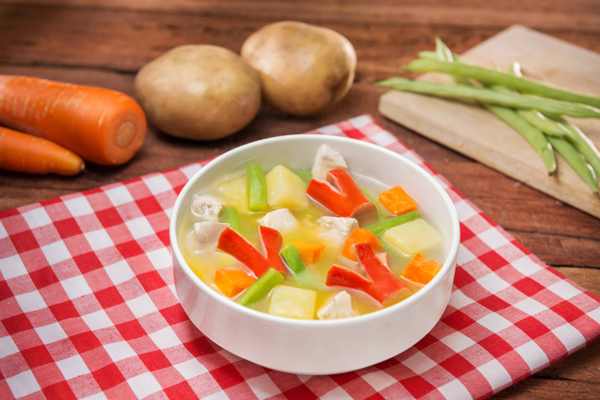

Indonesia Chicken Vegetable Soup (Sop Ayam)

Description
Sop Ayam is a light and comforting Indonesian chicken soup filled with
vegetables such as carrots,, potatoes, and cabbage. It is commonly served
as a home-style dish and enjoyed with rice, fried shallots, and lime.
Ingredients
- 500 g chicken pieces
- 1.5 liters water
- 2 carrots, sliced
- 2 potatoes, diced
- 1 cup cabbage, chopped
- 2 stalks celery, chopped
- 2 green onions, sliced
- 3 cloves garlic, crushed
- 1/2 teaspoon white pepper
- Salt to taste
- 1 tablespoon cooking oil
Optional toppings:
- Fried shallots
- Lime wedges
- Chili sauce
Stepsss
-
Boil the chicken
In a pot, boil the chicken with water until the chicken becomes tender.
-
Prepare the seasoning
Heat cooking oil in a pan and saute the crushed garlic until fragrant.
-
Add the seasoning to the soup
Pour the sauteed garlic into the chicken broth.
-
Add the vegetables
Add carrots and potatoess first. Cook for about 10 minutes.
-
Add the remaining vegetables
Add cabbage, celery, and green onions.
-
Season the soup
Add salt and white pepper to taste. Let it simmer for a few minutes.
-
Serve
Serve the soup hot and garnish with fried shallots and lime juice if
desired.
Back to main